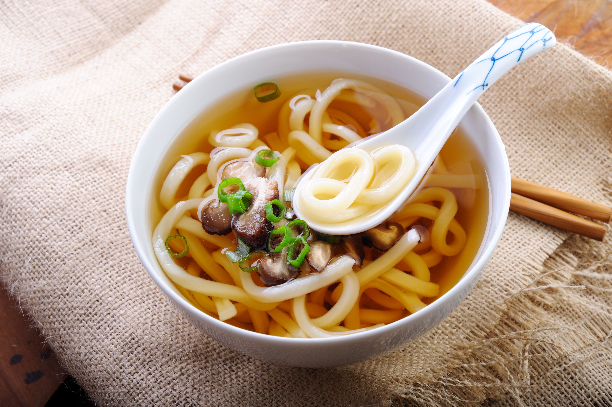

Udon

Description
This Japanese traditional recipe introduces you to the fascinating world of Japanese cooking.
Ingredients
udon
mentsuyu
water
Steps
pour water in a pot
put udon into the pot
boil water
when udon is boiled, add mentsuyu to pot